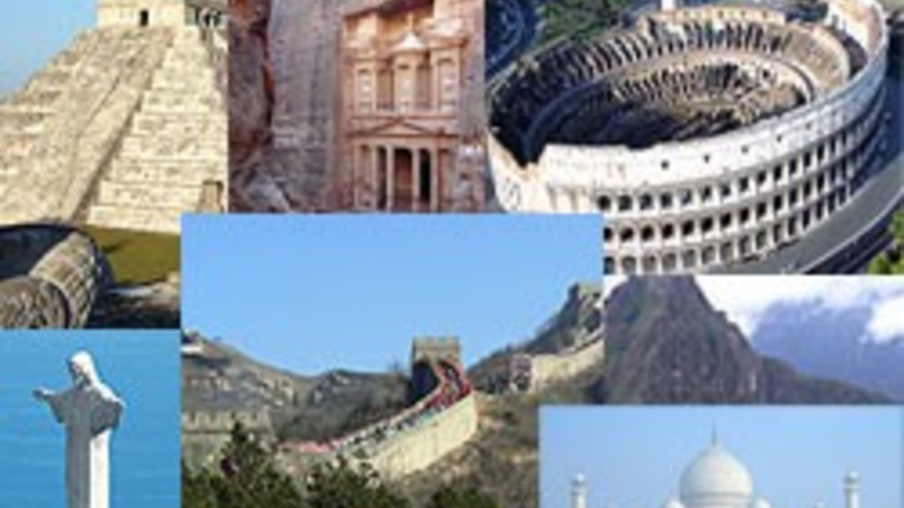

Care sunt cele 7 minuni ale lumii Imediat după ce Alexandru cel Mare a pus stăpânire, aproape integral, pe harta lumii, grecii au putut să viziteze civilizațiile egiptene, persane și babiloniene. Aceștia au fost impresionați de construcțiile pe care le-au putut admira și care i-au aparținut lui Antipater din Sidon, un epigramist de origine greacă. Lista cu cele 7 minuni ale lumii cuprindea numele a 7 clădiri din zona mediteraneană și din Orientul Mijlociu, acestea fiind și singurele și cele mai cunoscute zone de către grecii din antichitate. Toate edificiile erau construcții antropice, realizate de om.
În Antichitate, poeții greci Antipater din Sidon și Philon din Bizanț au realizat un top al celor mai frumoase și impunătoare clădiri ale acelor vremuri. Astfel, au apărut cele 7 mari minuni ale lumii antice, și anume: Marea Piramidă din Gizeh (Piramida lui Kheops), Templul din Efes, Farul din Alexandria, Mausoleul din Halicarnassos, Colosul din Rhodos, Grădinile suspendate din Babilon și Statuia lui Zeus din Olympia. Localizată în Egipt, în apropiere de Cairo, Piramida lui Kheops a fost singura din aceste structuri impunătoare care a supraviețuit și poate fi vizitată și în prezent. Celelalte minuni au fost complet distruse de cataclismele naturale. De asemenea, Marea Piramidă din Gizeh este cea mai veche dintre toate minunile lumii antice și, timp de 3.800 de ani, a fost și cea mai înaltă construcție antică din lume. Citeşte întreaga ştire: Care sunt cele 7 minuni ale lumii moderne și cum au fost stabilite